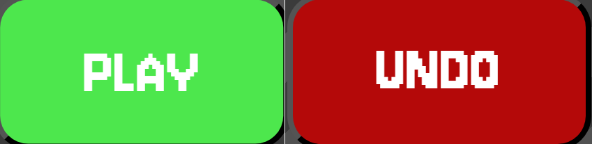
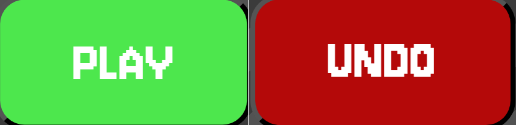

How to Play
Beginning the Game
The main goal of Cubicler is to assemble an optimal hand of items that reaches or surpasses the required level score.
With good synergy and a little luck, you can create an efficient desk to do your job!
At the start of the game, the player’s bin contains their starting item cards. The player can add items to their hand by using the mouse to DRAG and DROP an item from the bin.
The player can also SHUFFLE the bin up to 3 times each round to see other objects in the bin!
When the player thinks they have a good hand, they can click the PLAY button to score their current hand.
If the player wants to revoke a selection, they can click the UNDO button to remove the object card from their hand.
The player only gets a limited amount of rounds to complete each level, careful coordination and smart strategy is highly encouraged!
 

Items & Shopping
There are many items in the game with different variants and upgraded versions that the player has a chance of purchasing each round.
The game's items are categorized into 6 groups: Buff, Input, Display, Compute, Software, and Ergonomic. For example, the Cup of Coffee is a buff type item with common rarity.
Items have underlying synergies that add bonus score to the end of the round, this is the key to making the best desk!
For example, the mouse and keyboard object cards have upgrading synergies per rarity which adds bonus score when played in the same hand.
In the shop section the player has the opportunity to purchase new items for their bin, or pay to REROLL for the chance of a better item!
The shop is available to the player to add new item cards to their bin in exchange for money.
If the player has enough money, they can reroll the shop to get new items to buy.
Be careful, the shop may not have the same items when you come back for next level's task!
Tips for Winning
- Optimize shuffle and shop usage in the first rounds to make an exponentially better hand.
- Utilize item synergies to increase your bonus score. The item tooltips assist with learning each object!
- Sometimes, you just need to get lucky to get the job done!